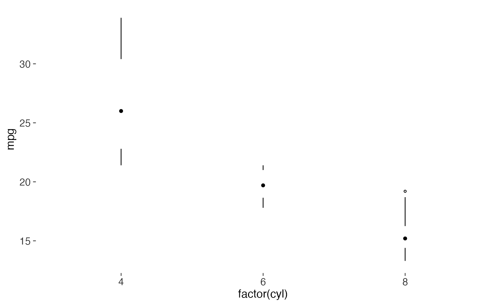
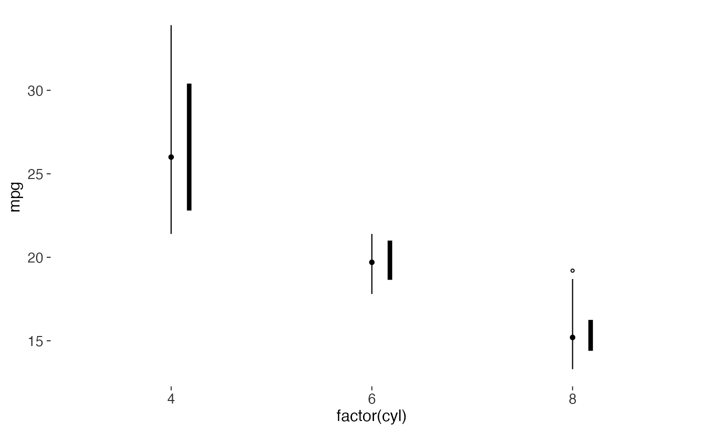

The box in a box plot is a container for four numbers that a line and a dot can hold on their own. Tufte's redesign erases the box, the cross-bar and the whisker caps, leaving between a third and a fifth of the original ink.
Usage
geom_tufteboxplot(
mapping = NULL,
data = NULL,
stat = "boxplot",
position = "dodge2",
...,
type = c("point", "line", "offset"),
offset = 0.12,
median_size = 1.6,
box_linewidth = 1.6,
outliers = TRUE,
na.rm = FALSE,
show.legend = NA,
inherit.aes = TRUE
)Arguments
- mapping, data, stat, position, na.rm, show.legend, inherit.aes, ...
Standard
ggplot2layer arguments. Seelayer().- type
One of
"point","line"or"offset".- offset
For
type = "offset", how far to shift the interquartile line, as a fraction of the category width. Defaults to0.12.- median_size
Size of the median dot for
type = "point". Defaults to1.6.- box_linewidth
Line width of the interquartile segment for the
"line"and"offset"variants. Defaults to1.6.- outliers
Logical. Draw outlying points beyond the whiskers? Defaults to
TRUE. Tufte would keep them: they're data.
Details
Three variants are offered, in increasing order of how much they keep:
"point"The default, and the sparest. Two whisker lines with a gap between them, and a dot at the median. The interquartile range is the gap.
"line"A thin whisker line across the full range, a thicker line over the interquartile range, and a white break at the median.
"offset"A thin whisker line, with the interquartile range drawn as a parallel line offset to one side. Use when the whiskers are short and an in-line box would be unreadable.
Examples
library(ggplot2)
ggplot(mtcars, aes(factor(cyl), mpg)) +
geom_tufteboxplot() +
theme_tufte()

ggplot(mtcars, aes(factor(cyl), mpg)) +
geom_tufteboxplot(type = "offset") +
theme_tufte()
